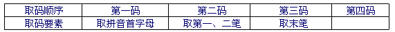

中文编码¶
穿越中文输入法采用了优化的中文音形编码方式，也就是说，编码时，每个汉字最多取四个字母，首先取第一个声母，然后按照字形用基本笔画书写顺序进行简单拆分。汉字由“横、竖、撇、点、折”五种基本笔画组成，按照一定规律分布在30个键盘上，5个基本笔画对应5个键，每两个笔画对应一个键。另外，为了方便，单独设置了一些常用的字根。每个字词最多4个字母。
例如输入：你好，取“你”的前两个字母nf，取“好”的前两个字母h,。只要输入nfh,即可。
键盘布局¶
笔画和基本字根分为五个双笔画区和一个单笔画区共六个区。如下图所示：

将拼音首字母是z的汉字改为用u输入；将读音是yi的汉字首码移到i键；将单笔划“横”放到e键。
⑴五个双笔画区：横区、竖区、撇区、点区、折区。由横笔开始的五种双笔画是： 一一、一丨、一丿、一丶、一┐，它们的第二笔分别是横、竖、撇、点、折，并按从左至右的顺序排列在横区；由竖笔开头的五种双笔画是丨一、丨丨、丨丿、丨丶、丨┐，也按从左至右的顺序排列在竖区。其余各区，照此类推。
⑵一个单笔画区：一、丨、丿、丶、┐五种单笔画，除了将“一”放到E键外，其它的也按从左至右的顺序排列。注：提=横 捺=点 竖左钩=竖。
拆分规则¶
汉字基本组成：
⑴独体字：只有一个结构的字。如“雨、丁、州、肃”等字。
⑵合体字：可较为直观、合理地拆分为至少两个结构的字。如“进、催、资、圆、直、”等。因较难区分，既作合体字、又作独体字对待的有“头、斗、步、弟、兼、见、六、鼠、云、羊、象、免、兔、首、鬼、革、百、面、而、父、巨、臣、卤、囟、囱”等。含“人、口、木”等字根的独体字作为合体字对待的有“贝、页、亥、肉、石、言、术”等
⑶末笔取码：即将独体字的最末一笔作为取码对象。最末一笔分为“横、竖、撇、点（捺）、折”五种笔画。例如“东”的末笔是点、“州”的末笔是竖。
⑷全分阴阳：即将合体字直观、合理地拆分为阴阳两半，前半为阴、后半为阳；后半能再分的，可以再次拆分为阴阳两半。例如，“资”拆分为阴半为“次”、阳半为“贝”；“贝”又可再次拆分为阴半“冂”、阳半“人”。
取码要素
输入法用30个键符给汉字进行编码，即26个英文字母键和4个非字母符号键——逗号、句号、分号、斜杠，用其代表汉字首码、5种单笔画、25种双笔画和12个设定部首。
汉字首码：用其汉语拼音的首字母来表示。例如：“chi”里的“c”，“ao”里的“a”。
5种单笔画：横（一）、竖（丨）、撇（丿）、点（丶）、折（┐）五种基本笔画。
25种双笔画：横、竖、撇、点、折五种单笔画两两组合出25种双笔画。
12个偏旁部首（即字根）：在键盘上设置了12个使用频率高的偏旁部首，即“金（钅）、木、水（氵）、土、火、日（曰）、月、人（亻）、口、手（扌）、艹、纟”。打字时遇到这12个设定的部首则不能拆分。它的记忆口诀为：“金木水土草，日月人口手，火与纟”。但在这里要注意的是：当有笔画穿过这12个偏旁部首时，这些偏旁部首要按笔画进行拆分。如“教”字，本来它的部首“土”是独立的字根不能被拆分的，但是因为有一撇穿过“土”字，所以它要被拆分。
编码规则¶
将汉字按字形结构分为独体字和合体字；按编码的长度分为一码字（一级简码）、二码字（二级简码）、三码字（三级简码）和四码字（全码）。输入汉字时，第一码取汉字拼音首字母（有特殊规定的除外），从第二码起取笔画或字根的代码，最多取四码。取码时要先区分独体字和合体字。合体字拆分，大部分应遵循“从上、从左”原则，但也有例外：①拆分后还能成字的，从成字处拆分，如“烹、鲁”两字，正确的拆分是，烹＝亨＋灬，鲁＝鱼＋日；②有明显边界的字，不管其笔顺如何，从边界处拆分，如“区、式”两字，应拆分为：区＝匚+乂，式＝弋＋工。
⑴一级简码：是指用一个字母表示的汉字，共有26个： Q（起）W（为）E（而）R（人）T（他）Y（有）U（这）I（一）O（我）P（平） A（啊）S（是）D（的）F（分）G（个）H（和）J（就）K（可）L（了） Z（在）X（学）C（成）V（地）B（不）N（你）M（们）
⑵独体字的输入：独体字最多取三码。为了规避重码，有时用逗号将其补足三码或四码。规则如下：
如：乡——首码是x，第二码是/，第三码是c，编码为x/c。注意：乡与纟不同。

⑶合体字的输入：
后半能再分的合体字：

如：撕SUJE=S（首音）＋U（扌）＋J（一丨）＋E（ノノ）
后半不能再分的合体字：

如：咱ULWZ=U（首音）＋L（口）＋W（ノ丨）＋E（一）
注意：
①合体字首先拆分为构件，然后取各构件的笔画。 如：式S;JE=S（首音）＋;（弋）＋J（ㄒ）＋E（一）
②合体字构件优先取整字，其次取普通结构。 如：幕MBGX=M（首音）＋B（艹）＋G（冂）＋E（丨）
③有明显界线的字视为合体字，并以该界线拆分结构。 如：丽LEGG=L（首音）＋E（一）＋G（冂）＋G（冂）
④有”冖”结构的合体字以此为分界线，且该结构不编码。 如：营YBLL=Y（首音）＋B（艹）＋L（口）＋L（口）
⑤”亻”右边如有一短竖，以此为分界线，且该结构不编码。 如：修XFTE=X（首音）＋F（亻）＋T（夂）＋E（彡）
⑷“可、灭、后、司”的编码：
因“可”字在写完第一笔后遇到字根，作为独体字对待，其编码分别被定义为“kex”。“后、司、灭”是合体字，“口、火”字以上的部分是前半，“口、火”是后半，其编码分别是“hel、snl、mei”。
⑸词组输入：
二字词：取每个字的前两码。 三字词：取第一字的前两个二码和最后两个字的第一码。 四字词：取每个字的第两码。 多字词：取前三字的第一码和最后一字的第一码（前三末一）。 注意：一码字是二字词或三字词的首字时，应取前两码。如：人民：RFMN（“人”字是一码字，但输入二字词时要取两码）。
⑹全形输入：不会读的字可选择全形方式，方法是”o＋全形”。如: 瘿 oyg,
特殊处理¶
⑴单字“特三码”功能，也就是将e或逗号作为第三码，为某一汉字设置了一个容错的三级简码。“特三码”有近300个，如：“累lge、玉yhe、九jte、及jt,、四sg,、步ba,、倒dg,”等，这些编码比原正确编码好打了许多。
⑵单字“特二码”——一般是将某一汉字的第二码再设一个非正常编码，以大幅减少字词的重码，共40多个：当d, 更g, 称c, 程c, 重c, 说s, 岂q, 去q, 图t, 未w, 违w, 知z, 智z, 则z. 常c. 报b. 抱b. 勿w. 飞f. 又ya 慢ma 记ja 计ja 即ja 靠kd 海hd 能ne 长ee 老le 有ye 先xi 推tj 任rj 会hr 会kr 就jr 以ir 您nr 真ur 快kr 失sv 适sv 路lv做z, 则z.求qm 变bm。特二码参与词组的编码。
⑶词组“特四码”——即利用编码中用得较少的a键、分号键作为第四码，为部分词组设置的一个容错的编码。主要功能：①有重码的极常用的词，将与其重码的相对不常用的词设置成特四码，以保证极常用的词用正确编码打出时没有重码，直接上屏；②排在靠后的比较常用的重码词用特四码来表示，使其在无重码状下用特四码可以打出，直接上屏。规则是：当“特四码”词的第三码用右手击键时，第四码就为a，用左手击键时，第四码就为分号，以实现左右手交叉打字。如果编码a和;被占用，则利用“, . /”来进行编码。
⑷为了减轻右小指击键压力，第一、二码都用右手击键且第二码是“/”的字词，“/”可以用“z”代替。
⑸对单字有选择地采用了“出简不出全”的编码方案。“○”可以用zo打出。
⑹设置双声母两码词组70多个。如：人民rm、加快jk、安全aq、可以ki、但是ds等。
⑺巧妙利用码元逗号。因逗号总是排在所有同类编码的前面，一是利用逗号作为补码——不足三码、四码的可用逗号补足；二是将一些不常用的字，用逗号作为第四码，生成一个容错的编码。
⑻设置了可以两键或三键上屏的标点和符号。方法是：先打v键，再打a、b、c等键。注意：除了问号双击v键可以直接上屏外，引号、冒号、叹号、省略号、破折号等常用符号的第二码一律放到右手位。
⑼建议新手一周内不要用“特二码”、“特四码”打字，词组最好打全码，遇重码时输入下一编码，处在候选窗第一位的词会自动上屏。